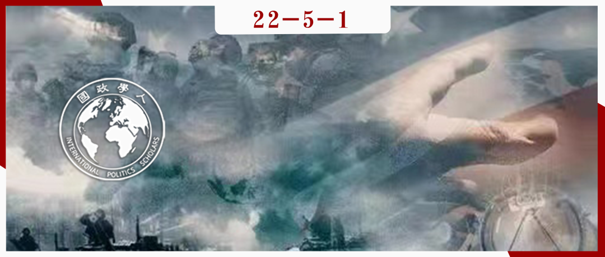

收录于合集

军事联盟与公众对战争的支持
作者： Michael Tomz，斯坦福政治学系主任，研究方向有美国政治、比较政治与政治学方法论等；Jessica L.P. Weeks，威斯康星大学麦迪逊分校政治学系教授，研究方向有外交政策、公众舆论及二者间的关系等。
编译： 闫一苇（国政学人编译员，重庆大学博雅学院）
来源： Tomz, Michael, and Jessica L.P. Weeks. (2021) Military Alliances and Public Support for War. International Studies Quarterly , doi: 10.1093/isq/sqab015

导读
军事联盟如何使公众支持战争，以保护侵略行为中的受害者？这篇文章的调查研究表明，联盟通过增强公众对于不介入所造成声誉代价的担忧以及出于公平与忠诚而介入的道德义务，塑造公众舆论，从而提升公众介入国外事务的意愿。联盟在介入成本高、介入风险低以及需要援助的国家不是民主国家时能够对公众舆论产生最大的影响。因此，即便是在履行承诺极其不便时，联盟也能制造出战争压力。本文的发现为联盟与其他国际法律承诺的后果、道德在外交政策中的作用以及关于国内观众成本的持续争论提供了新的线索。
摘要
军事联盟重要吗？如果重要的话，它们在什么时候又为什么体现出重要性呢？这些问题在学术界和政界一直被讨论。在这篇文章中，本文研究了 关于联盟如何塑造公众对于战争支持态度的难题 。
文章通过控制变量在美国进行了调查实验，并验证了这样 三个假设 ：首先，公民应该更支持对美国的正式军事盟友，而非尚未与美国签署联盟协议的国家进行军事介入；其次，联盟应通过两种主要机制影响公众舆论：一是增强公众对于不介入带来的声誉代价的担忧，二是增强进行介入的道德义务；最后，即使履行承诺极其不便，联盟也可以在国内制造战争压力。之后，本文测量了被调查者是否以及为什么支持或反对美国军事力量来保卫被入侵的国家。
本文的实验得出了几个重要的发现。 首先，军事联盟极大地改变了公众对于战争的偏好；其次，联盟对公众舆论的影响是通过声誉与道德这两种机制产生的；最后，尽管联盟在各种情况下影响着公众舆论，当介入成本高、介入风险低以及需要援助的国家不是一个民主国家时，联盟会产生最大的影响。
编译
01
关于联盟和公众舆论的假设
近年来，学界对于公众舆论如何影响民主国家的对外政策以及影响公众对战争支持态度的因素进行了研究。然而迄今为止，军事联盟是否以及为什么会影响公众保护受攻击国意愿的问题还未被研究。此外，学者们也没有研究联盟如何与其他影响公众舆论的关键因素相互作用。
本文假设正式联盟通过 三个潜在的互补机制 影响公众对战争的支持态度：作为可靠的军事盟友的声誉（“军事声誉”）、在其他领域作为可靠的合作伙伴的声誉（“非军事声誉”）以及包括公平与忠诚在内的道德考虑。许多研究认为，违反联盟承诺会损害一个国家的声誉。通过指出选民会预估放弃盟友对于本国军事声誉的损害，本文将先前的见解与国内政治联系起来。文章进一步认为，公民会预判另外的声誉损害，如让盟友陷入困境可能会损害该国在贸易或环境等非军事领域的可靠性声誉。最后本文认为，联盟关系引发了公众对公平与忠诚度的担忧。除此之外，本文还提出了联盟在什么情况下可能最有效的假设。
02
联盟的情景与影响
先前的研究发现，对于介入行为的支持程度因矛盾的利害关系、介入的预期成本以及需要帮助的国家的制度类型而不同。本文假设这些相同的情景变量应该可以调节联盟的影响。一般来说，当变量使得对于介入的支持率已经非常高时，联盟可以产生额外影响的程度就有限。作为推论，本文还预测，联盟将减弱情景变量的解释力。
本文关于 联盟与情景变量之间相互作用 的假设也使之前关于联盟可靠性的研究（一国支持而不是违背联盟的可能性）具有了新的视角。之前的研究发现，各国在大多数时间都遵守正式的联盟协议。但是，国家尊重联盟并不能证明联盟会改变其行为。假设当 风险高、成本低以及需要防卫的是民主国家 时，不管受害者是否是其盟友，选民支持介入的速度都完全相同。在这种情况下，联盟将是可靠却是无关紧要的。这使得联盟和介入之间明显的相关性被证伪。为了找出联盟是否以及何时产生结果，本文必须对于每个情景变量进行检验，看看联盟存在时战争的支持程度是否比不存在时更高。
03
研究策略
为了研究联盟如何影响对于战争的支持程度，本文在美国进行了调查研究。受访者看到了这样一种假设的情况，即一个国家入侵另一个国家，并试图夺取领土。本文将美国是否与被入侵国家结成正式联盟以及可能使联盟或多或少成为重要原因的情景 随机 ，得到了2×2×2×2×4的设计。在描述了这种情况后，本文测量了对于美国军事介入他国以阻止入侵的行为的支持程度。文章还衡量了人们对于美国的反应将如何影响其在维护联盟协议方面与非军事领域的声誉以及美国是否有道德义务进行介入这三种机制的看法。
04
联盟对于公众对战争支持程度的影响
图1显示了联盟相对于其他随机对于公众战争支持程度的影响。图2显示了其他随机的影响并将它们与联盟进行比较。虽然它们最初造成的影响比较有限，但这些影响会因联盟存在与否而被抵消。正如本文下面所展示的，在没有联盟的情况下，风险、政体和成本的影响更大；而地域差异的影响则很小，在统计学上几乎为零。
图1 联盟对于战争支持程度的影响
图2 所有随机对于战争支持程度的影响
总之， 联盟塑造了公众对于战争的支持 。受访者高度重视对于军事联盟的尊重，并愿意派遣美军投入战斗，以履行先前的承诺。
在研究联盟的影响如何因为情景变量而变化之前，本文将已有的发现与不断增多的关于国内观众成本的文献联系起来。本文的数据表明，与非盟友相比，领导人将因拒绝帮助盟友而付出更大的公众舆论代价。
05
情景会缓和联盟的影响吗？
本文调查了联盟在某些情况下是否比其他情况下更重要。文章假设，当战争形势较弱时，联盟将比当其更有吸引力时更重要。作为推论，本文预测联盟会降低情景变量的解释力。
图3显示了联盟与三个情景变量的不同组合下对于战争的支持程度。在没有联盟的情况下，情景变量强烈地影响了公众舆论。然而正如本文所预测的那样，当引入联盟时，情景变量就变得远不那么重要了。总体来说， 联盟削弱了情景变量的解释力 。
图3 在不同情景与联盟的有无之下对于战争的支持程度
联盟在某些情况下比在其他情况下发挥更强的作用。 图4显示了图3数据的处理效果，显示了联盟如何在上述条件下增加对于介入的支持。根据图3与图4，本文可以推测在涉及真实国家的危机时公众对介入的支持程度会如何不同，以及联盟将如何影响公众捍卫民主国家的意愿。
图4 在不同情景下，联盟对于战争支持程度的影响
本文的发现有这样几个意义：首先，联盟是一种强大的承诺，它甚至可以在战争看起来没有吸引力时影响公众舆论；其次，文章的研究结果强调了联盟的可靠性和有效性之间的差异；最后，文章关于情景的研究结果有助于国际关系中关于国内观众成本的研究。
06
为什么联盟会影响对战争的支持？
接下来，本文研究了军事可靠性的声誉、非军事可靠性的声誉和道德义务这三种机制。 通过这些机制，联盟可以推动公众支持战争。
本文对联盟、成本、风险、政权和地域的所有互动进行回归，同时控制了人口和态度变量。这些变量可能会影响受访者对声誉或道德的看法。在回归中，文章通过平均其他随机定义的在2×2×2×2×4中的影响来估计联盟对每种中介变量的主要影响。
图5显示，当受害国是盟友时，受访者更有可能认为不介入会损害美国军事可靠性与非军事可靠性的声誉。公众预测，对美国军事声誉的损害要大于对其非军事声誉的损害。最后，联盟产生了一种强烈的道德责任感。相比不是盟友的情况，当受害国是其盟友时受访者更有可能认为有义务进行道德干预。总的来说，图6证实了联盟影响人们对三种中介变量的认知，并且主要是通过改变人们对道德义务的看法和美国作为可靠盟友的声誉来推动公众舆论的。
图5 联盟对于中介变量的影响
图6 对于因果机制的估计
因此，本文的研究结果有力地支持了关于机制的假设： 联盟通过增强人们对美国作为可靠盟友的声誉的担忧以及引起道德责任感，来影响对于战争的支持。 相比之下，文章并没有发现很多证明联盟是因为对声誉溢出的担忧而变得重要的证据。
07
是什么驱使了人们对道德义务的认知？
本文发现，有证据表明，联盟部分地通过触发一种道德上的责任感来影响公众对于战争的支持。为什么公民认为联盟的承诺具有道德约束力？本文从与之前相同的测试开始，发现先前对于联盟的影响、情景的作用和潜在机制的预测都得到了很好的复制。
后续研究提出了一系列问题，旨在衡量哪些特定的道德基础影响了人们对道德义务的认知。本文对于如果不进行干预，是否会违反 公平、忠诚、权威、关爱、自由与圣洁这六大主要道德基础理论（MFT） 中的某些部分进行了提问。文章还在联盟、成本、风险、政权类型和地域的所有相互作用上回归了以上每一种道德基础，并控制了人口与态度变量。图7展示了联盟对每一种道德基础的平均影响。
图7 联盟对于道德基础的影响
接下来，本文研究了这六种道德基础和关于介入的道德义务的总体信念之间的关系。其他因素相同的情况下，对公平和忠诚的感知与相信“美国有道德义务保卫被攻击的国家”密切相关。最后，文章使用前面描述的方法估计了每个因果路径的重要性。如图8所示，联盟似乎主要通过提高对于公平与忠诚的担忧来影响人们对道德的整体信念。
图8 对于道德义务的因果机制的估计
总之，联盟引发了对于 公平与忠诚 的关注，并对于使联盟更加团结的道德责任感有所增益。这些发现强调了道德倾向在解释人们对外交政策的态度时的重要性。本文的研究结果表明，寻求在支持盟友这一问题上影响公众舆论的领导人面临着挑战和机遇。
08
关于联盟的公众舆论的政治重要性 ****
本文的实验表明，联盟增强了公众对于战争的支持，证明了联盟的作用如何因环境而变化，并揭示了联盟塑造公众舆论的原因。文章还将讨论公众对联盟的意见如何影响国家行为，以及为什么公民在军事危机期间更可能会了解联盟的情况。
公众舆论可以通过刺激民选官员来影响国家行为。 研究发现，民主领导人密切关注公众舆论，并清楚在战争问题上与公众意见相左会造成严重的国内政治代价。他们有着尊重公众对联盟意见的强烈动机。理所当然的，在公众舆论与其他激励措施一同作用的情况下，领导人可能不得不发动或退出战争。本文发现，联盟通过提高人们对声誉与道德的关注来塑造公众舆论。如果领导人自己有了类似的担忧，他们可能在没有公众压力的情况下也以类似的方式作出联盟反应。
然而， 本文提出了四个观察结果 ：首先，可能会出现民选官员与选民对于军事力量意见不一的情况，而公众压力可能在领导人因为现实主义或特殊原因试图避免冲突时刺激其维持联盟；其次，即使精英与民众意见一致，公众舆论也可能加强现有的激励措施；第三，如果民选官员像普通民众一样思考，那便代表着一种公民选择相同偏好领导人的机制（可以解释为什么尊崇联盟的领导人更倾向于赢得民主选举）；最后，了解公众舆论对于判断民主国家的代表性至关重要，本文的实验为判断哪些决定可能反映或违背人民的意愿提供了一个规范的基准。
09
结论
军事联盟何时以及为什么会影响公众舆论？本文的实验揭示了 三个主要的发现 ：首先，军事联盟深刻地影响着公众对于战争的支持程度；其次，联盟在所有情况下都很重要，但其影响力在环境最不利于战争时最大；第三，联盟通过提高人们对美国军事可靠性声誉的担忧与激发道德责任感（公平与忠诚），来塑造公众对于战争的看法。
本文的发现对于研究和实践都具有意义。本文的研究结果为民主国家可以成为非常可靠的盟友的实证发现提供了微观基础，也为联盟的威慑价值提供了国内政治基础。本研究还有助于回答为什么民主领导人偶尔会违反他们的联盟承诺，以及为什么侵略国并不总认为联盟承诺可信的问题。本文对机制的分析提供了关于联盟违规行为的进一步线索。文章的发现不仅阐明了国内尊崇联盟的动机，也有助于解释为什么民主领导人倾向于谨慎选择与设计联盟。另外，本研究的工作对于与观众成本的相关研究有所助益。最后，本文还为更广泛的关于国际法的研究作出了贡献。
词汇积累
中介变量 mediator
情景变量 contextual variable
道德基础理论
moral foundations theory（MFT）
审校 | 谭伟业 邵良
排版 | 陆霜滢 廉梦瑶
文章观点不代表本平台观点，本平台评译分享的文章均出于专业学习之用, 不以任何盈利为目的，内容主要呈现对原文的介绍，原文内容请通过各高校购买的数据库自行下载。

国政学人
支持学术公益与知识传播
微信扫一扫赞赏作者 __赞赏
已喜欢，对作者说句悄悄话
取消 __
发送给作者
发送
最多40字，当前共字
上一页 1/3 下一页
长按二维码向我转账
支持学术公益与知识传播
受苹果公司新规定影响，微信 iOS 版的赞赏功能被关闭，可通过二维码转账支持公众号。